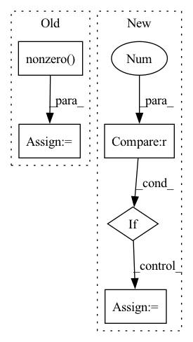

Pattern ID :441

Before Change
if isinstance(adj, Tensor):
return dense_to_sparse(adj)
else:
idxs = np.nonzero(adj)
edge_index = np.stack(idxs)
edge_weights = adj[idxs]
return edge_index, edge_weights
After Change
edge_attr = adj[index]
if len(index) == 3:
batch = index[0] * adj.shape[-1]
index = (batch + index[1], batch + index[2])
edge_index = backend.stack(index, 0)
In pattern: SUPERPATTERN
Frequency: 3
Non-data size: 5
Instances
Fragment ID: 2467136
Project Name: torchspatiotemporal/tsl
Commit Name: 50089afdf23de12eb6d11e9d5e7e64d949d45611
Time: 2022-08-18
Author: ivan.marisca@hotmail.it
File Name: tsl/ops/connectivity.py
M Class Name: AnonimousClass
N Class Name: AnonimousClass
M Method Name: adj_to_edge_index(2)
N Method Name: adj_to_edge_index(1)
M Parent Class:
N Parent Class:
M File Name: tsl/ops/connectivity.py
N File Name: tsl/ops/connectivity.py
M Start Line: 92
M End Line: 114
N Start Line: 106
N End Line: 145
'>
Before Change
if isinstance(adj, Tensor):
return dense_to_sparse(adj)
else:
idxs = np.nonzero(adj)
edge_index = np.stack(idxs)
edge_weights = adj[idxs]
return edge_index, edge_weights
After Change
edge_attr = adj[index]
if len(index) == 3:
batch = index[0] * adj.shape[-1]
index = (batch + index[1], batch + index[2])
edge_index = backend.stack(index, 0)
'>
Fragment ID: 2467133
Project Name: torchspatiotemporal/tsl
Commit Name: f28e5a2fddc34eeb90a13c113512c8ab12b6138b
Time: 2022-07-20
Author: ivan.marisca@hotmail.it
File Name: tsl/ops/connectivity.py
M Class Name: AnonimousClass
N Class Name: AnonimousClass
M Method Name: adj_to_edge_index(2)
N Method Name: adj_to_edge_index(1)
M Parent Class:
N Parent Class:
M File Name: tsl/ops/connectivity.py
N File Name: tsl/ops/connectivity.py
M Start Line: 92
M End Line: 114
N Start Line: 106
N End Line: 145
'>
Before Change
bond_buckets[native_bond_idxs[1], native_bond_idxs[0]] = cutoffs.shape[0]
// find the indexes - symmetric and we dont want the diag
close_bond_idxs = ( bond_buckets < len(cutoffs) ).triu(diagonal=1)
close_bond_idxs = ( close_bond_idxs + close_bond_idxs.t() ).nonzero().t()
// merge all bonds
whole_bond_idxs = torch.cat([native_bond_idxs, close_bond_idxs], dim=-1)
After Change
bond_buckets += len(cutoffs) * torch.eye(bond_buckets.shape[0]).long()
close_bond_idxs = ( bond_buckets < len(cutoffs) ).nonzero().t()
// merge all bonds
if close_bond_idxs.shape[0] > 0:
whole_bond_idxs = torch.cat([native_bond_idxs, close_bond_idxs], dim=-1)
else:
whole_bond_idxs = native_bond_idxs
// 2. ATTRS: encode bond -> attrs
bond_vecs = x[ whole_bond_idxs[0] ] - x[ whole_bond_idxs[1] ]
'>
Fragment ID: 2467134
Project Name: lucidrains/geometric-vector-perceptron
Commit Name: 22f9b33ad0772e693055c0076bdd5607b66fbe2d
Time: 2021-02-28
Author: ericalcaide1@gmail.com
File Name: examples/data_utils.py
M Class Name: AnonimousClass
N Class Name: AnonimousClass
M Method Name: encode_whole_bonds(5)
N Method Name: encode_whole_bonds(5)
M Parent Class:
N Parent Class:
M File Name: examples/data_utils.py
N File Name: examples/data_utils.py
M Start Line: 345
M End Line: 379
N Start Line: 339
N End Line: 378